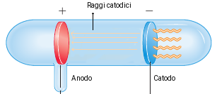

Scoperta dei protoni
Un altro fenomeno interessante osservato nei tubi di Crookes era una luminosità che si estendeva dietro il catodo; La formazione di buchi nel catodo permettevano a tali raggi. Un tubo di scarica modificato come mostrato in figura, permetteva di studiare tali raggi:
Il fisico tedesco Wihelm Wien studiò la deflessione di tali raggi in presenza di campi elettrici e magnetici, concludendo che:
I raggi uscenti il catodo vegnono deflessi da campi magnetici in una direzione tale da stabilire che si tratta di particelle cariche positivamente.
L'intensità dei campi elettrici e magnetici impiegati risulta superiore a quella usata da Thmonson negli studi sugli elettroni, provando che queste particelle sono più massive dell'elettrone. Aventi almeno una massa parti all'idrogeno.
La deflessione che risultava da una stessa intensità dei campi era differente a seconda del gas, a dimostrazione che gas diversi generavamo particelle positive con masse differenti.
Le particelle vennero riconosciute come ioni di carica positiva formatisi dalla rimozione di uno o più elettroni dall'atomo.
I due tipi di particelle scoperti da Thomson e Wien riuscivano a fornire una giustificazione del fatto che l'atomo risultava elettricamente neutro. Rimaneva ancora da capire come i due tipi di particelle fossere disposte nell'atomo. Ernest Rutherford riuscì a fornire un modello che giustificava i risultati sperimentali sinora osservati, includendo quelli più recenti sulla radioattività.